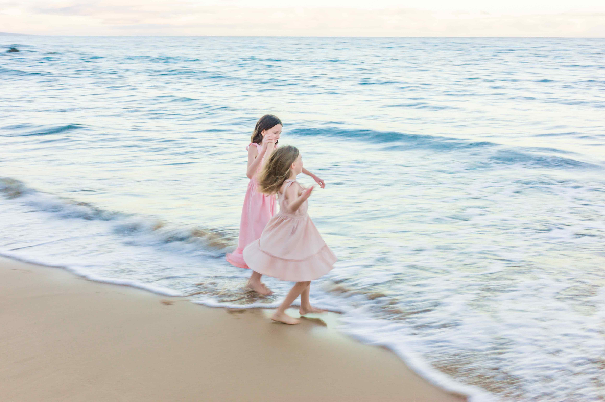

Where to park for a sunrise session at Keawakapu Beach II.
A practical, no-surprises guide to arriving on time and meeting us on the beach.
BY LAURENCE BALTER · FOUNDER & LEAD PHOTOGRAPHER, WAILEA PHOTO
Meet us on the beach at Keawakapu Beach II.
The lot is small, but it should offer plenty of parking at sunrise. Walk down the steps and meet us on the beach.
Make sure to bring a bag or backpack for your personal items so everything is easy to carry and keep together during the session.
The best light lasts only a few precious minutes.
Sunrise photography has a hard deadline: the light. Unlike a sunset session, where a few minutes of delay just means slightly different color in the sky, a late arrival at sunrise can mean missing the best light of the entire session.
As the sun starts to rise behind Haleakalā Volcano, it offers diffuse, soft light. Very quickly, however, the scene is lit by intense sunlight that changes the look completely.
Why can't you come to my hotel?
This beach offers the best balance of broad shoreline, no buildings in the background, very few morning joggers, and a beautiful variety of lava rocks and palm trees.
If you are coming from the Grand Wailea or another resort, make sure to tell the valet the night before that you need your car waiting in front 15 minutes before you plan to leave the hotel. As soon as you wake up in the morning, call the valet again.
This is critical because a delay on their part can ruin your photoshoot and cost you the precious minutes of soft light that make a sunrise session so beautiful.
What people ask before an early session.
Is there parking at Keawakapu Beach II for an early sunrise session?
Yes. The public lot is small, but it should offer plenty of parking at sunrise. Walk down the steps and meet us on the beach.
How early should I arrive for a sunrise photo session?
Plan to arrive 10 to 15 minutes before your scheduled start time. Sunrise light changes very quickly, so arriving late can mean missing the softest light of the session.
Why is the sunrise session at Keawakapu Beach II instead of my hotel?
Keawakapu Beach II offers an excellent balance of broad shoreline, no buildings in the background, very few morning joggers, lava rocks and palm trees.
What should I bring to the photoshoot?
Bring a backpack or bag for your valuable items. Leave your hotel wristbands in your room. For ladies, translucent or matte makeup is best. We will get a little wet at the end, so bring a towel. There is a beach shower to wash your feet at the end. If you plan on going to breakfast, we recommend Kihei Caffe.